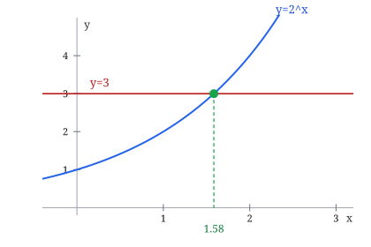

<script src="/assets/redirect.js"></script>
<section class="theory" data-section="P23-2.5">
<h2>2.5 Solving exponential equations</h2>
<p class="src">Based on Cambridge International AS &amp; A Level Mathematics: Pure Mathematics 2 &amp; 3 Coursebook (Hugh Neill, Douglas Quadling and Julian Gilbey), Chapter 2 Logarithmic and exponential functions, printed pp.38–39 (Worked examples 2.11–2.12, Exercise 2E). Own wording and new numbers. Natural logarithms and transforming a relationship to linear form are left to later subsections.</p>
<p class="key-words"><strong>Key words:</strong> <em>exponential equation</em>, <em>logarithm</em></p>
<p>An <strong>exponential equation</strong> is an equation in which the unknown appears in an index. If the powers cannot be written with the same base, take logarithms of both sides (any valid base; base \(10\) is usual) and use the power law \(\log(a^{f(x)})=f(x)\log a\). Then collect the terms that contain the unknown and solve.</p>
<p>Answers in this subsection are usually required correct to \(3\) significant figures, unless an exact form is asked for. If a substitution such as \(y=a^x\) produces a quadratic, reject any root that would make \(a^x\) negative, because \(a^x\) is always positive for \(a\gt 0\).</p>
<div class="worked-example">
<h4>Worked example 1: Taking logarithms of both sides</h4>
<p class="src">Book: Worked example 2.11 part a, p.38; new equation</p>
<p>Solve \(3^{2x+1}=15\), giving the answer correct to \(3\) significant figures.</p>
<ol class="steps">
<li>Taking logarithms to base \(10\), \(\log(3^{2x+1})=\log 15\), so \((2x+1)\log 3=\log 15\). Then \(2x\log 3=\log 15-\log 3=\log 5\), and \(x=\dfrac{\log 5}{2\log 3}\). <span class="mark">M1</span></li>
<li>This is \(0.732\) to \(3\) significant figures. <span class="mark">A1</span></li>
</ol>
<p class="final"><strong>Answer:</strong> \(x=0.732\) to \(3\) significant figures</p>
</div>
<div class="worked-example">
<h4>Worked example 2: Different bases on each side</h4>
<p class="src">Book: Worked example 2.11 part b, p.38; new equation</p>
<p>Solve \(2^{3x-1}=5^x\), giving the answer correct to \(3\) significant figures.</p>
<ol class="steps">
<li>Taking logs, \((3x-1)\log 2=x\log 5\). Expanding and collecting \(x\) terms, \(3x\log 2-x\log 5=\log 2\), so \(x=\dfrac{\log 2}{3\log 2-\log 5}\). <span class="mark">M1</span></li>
<li>This is \(1.47\) to \(3\) significant figures. <span class="mark">A1</span></li>
</ol>
<p class="final"><strong>Answer:</strong> \(x=1.47\) to \(3\) significant figures</p>
</div>
<div class="worked-example">
<h4>Worked example 3: A substitution \(y=2^x\)</h4>
<p class="src">Book: Worked example 2.12, pp.38–39; new coefficients</p>
<p>Solve \(2(2^{2x})-5(2^x)-3=0\), giving the answer correct to \(3\) significant figures.</p>
<ol class="steps">
<li>Let \(y=2^x\). The equation becomes \(2y^2-5y-3=0\), or \((2y+1)(y-3)=0\), so \(y=3\) or \(y=-\dfrac{1}{2}\). <span class="mark">M1</span></li>
<li>\(2^x=-\dfrac{1}{2}\) has no solution, because \(2^x\) is always positive. From \(2^x=3\), \(x=\dfrac{\log 3}{\log 2}=1.58\) to \(3\) significant figures. <span class="mark">A1</span></li>
</ol>
<p class="final"><strong>Answer:</strong> \(x=1.58\) to \(3\) significant figures</p>
</div>
<p></p>
<h3>Quick check</h3>
<div class="quick-check" data-q="QC1">
<p>Solve \(2^x=20\), giving the answer correct to \(3\) significant figures.</p>
<p class="final"><strong>Answer:</strong> \(x=4.32\)</p>
</div>
<div class="quick-check" data-q="QC2">
<p>Solve \(5^{2x+1}=12\), giving the answer correct to \(3\) significant figures.</p>
<p class="final"><strong>Answer:</strong> \(x=0.272\)</p>
</div>
<div class="quick-check" data-q="QC3">
<p>Solve \(3^x=2^{x+2}\), giving the answer correct to \(3\) significant figures.</p>
<p class="final"><strong>Answer:</strong> \(x=3.42\)</p>
</div>
</section>
